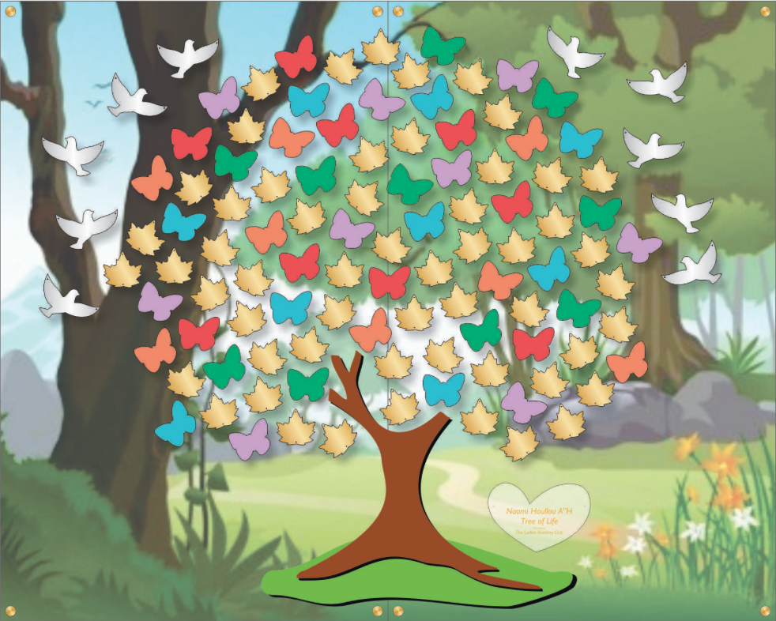

Tree Of Life Foundation
To Our Dear Ladies Auxiliary Past Presidents,
It has always been said and has always been felt that we are part of a special club and share a special bond,
although some of us have never actually met in person. On November 5th, we lost one of our own, Naomi Houllou A"H.
It is an unfathomable loss to her family, her friends, our school and to the greater community at large.
We are embarking on a heartfelt project that we hope all of the past presidents will participate in.
We are creating the Naomi Houllou A"H Tree of Life in the Ladies Auxiliary office.
This memorial is going to represent everything that Naomi stood for - warmth, life, spirit, and of course, dedication to our precious children.
The Tree of Life will have birds, leaves and butterflies, which will all be available for sponsorship open to the entire parent body, administration and faculty.
The trunk, which supports the upper part of the tree, will be dedicated solely by the Ladies Auxiliary past presidents, as is appropriate since we have always been
the support system for the children and parents of our Yeshivah. The inscription on the trunk will read, "Sponsored by the Yeshivah of Flatbush Ladies Auxiliary Past Presidents."
For this endeavor, we are seeking a sponsorship from each of the past presidents in denominations of either $180, $360 or $501.
For any donation $501 or above, we will also individually list your name on one of the silver birds.
In addition to the sponsorships, every year there will be a nominating committee to select a "Volunteer of the Year".
This person will not be a member of the Ladies Auxiliary board.
They will be honored with an intimate ceremony in the Ladies Auxiliary office and a butterfly will be inscribed with their name on it.
Thank you for your participation and support!